FSRL:小样本知识图谱补全框架
本文最后更新于：4 天前
模型FSRL
主要由三部分组成：
（1）为每个实体通过邻居信息进行编码
（2）聚合每个关系的少量参考实体对信息
（3）将查询实体对(query entity pair)与参考集(reference set)进行匹配来进行关系预测
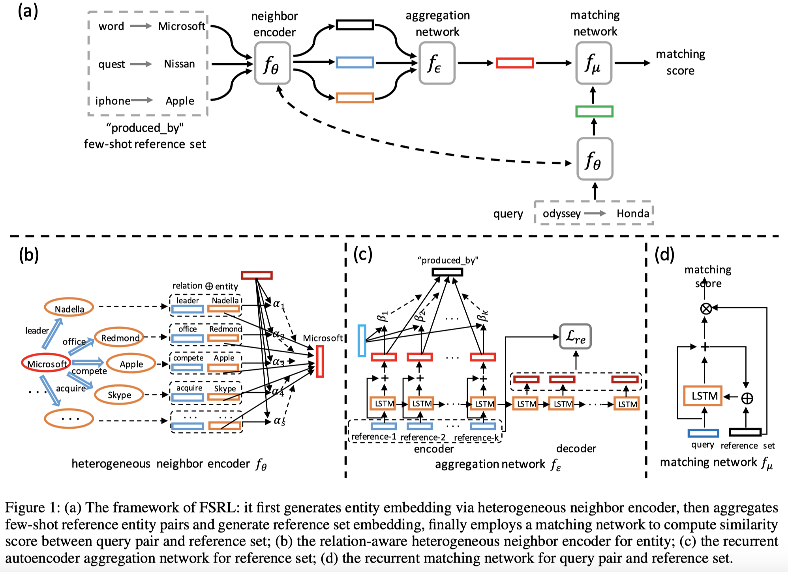
Encoding Heterogeneous Neighbors
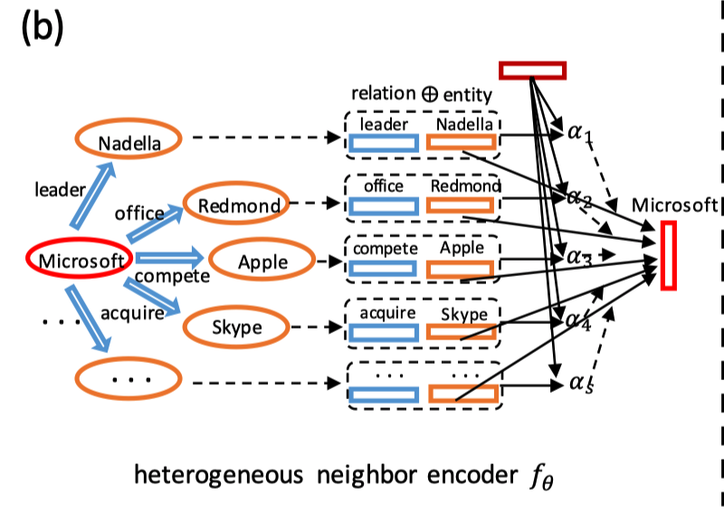
通过引入注意力机制的模型，考虑实体邻居节点的不同影响力来编码实体h的表示：
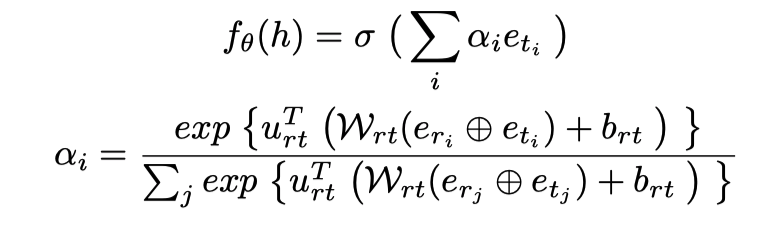
Aggregating Few-Shot Reference Set
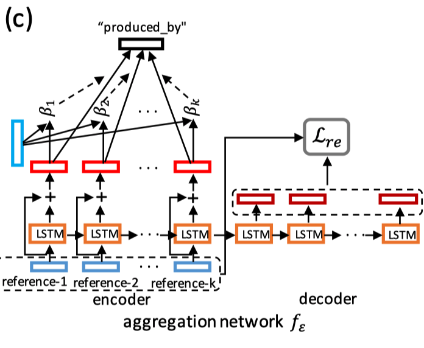
当前模型（例如GMatching）无法在参考集中模拟小样本实例的交互，这限制了模型的功能。 因此，我们需要设计一个模块，以有效地为每个关系r制定参考集$Rr$的聚合嵌入。 通过将邻居编码器应用于每个实体对$（h_k，t_k）∈R_r$，我们可以获得$（h_k，t_k）$的表示为$\mathcal{E}{hk,t_k} = [fθ（hk）⊕fθ（t_k）]$。 学习具有很少拍摄的实体对的参考集$R_r$的表示形式具有挑战性，因为它需要对不同实体对之间的交互进行建模并积累其表达能力。 我们解决了这一难题并制定了$R_r$中所有实体对的聚合表示：
$\mathcal{AG}$可以是池化操作，或者是前馈神经网络等，本文设计了一个具有良好性能的循环自动编码器：
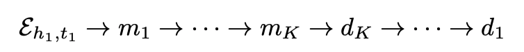
为了制定参考集reference set的嵌入，我们汇总了编码器的所有隐藏状态，并通过添加残差连接(residual connection)和注意力权重来扩展它们。
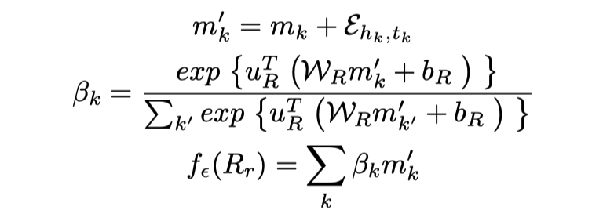
Matching Query and Reference Set
本次训练步骤概括如下：
- 采样少量实体对作为reference set
- 采样一些作为查询实体对query entity pair
- 将查询实体对替换尾节点作为反例
- 计算并更新匹配LSTM的参数
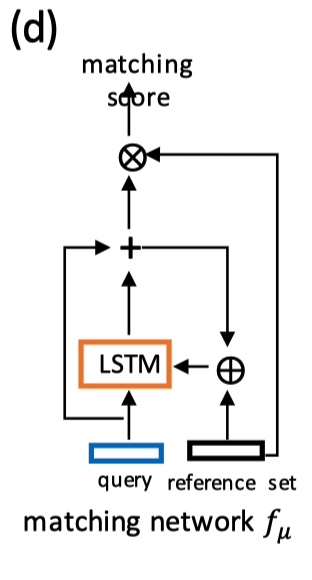
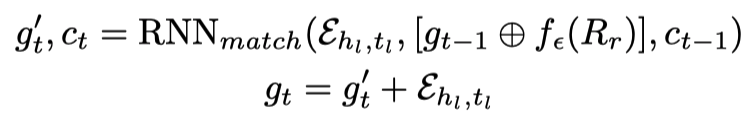
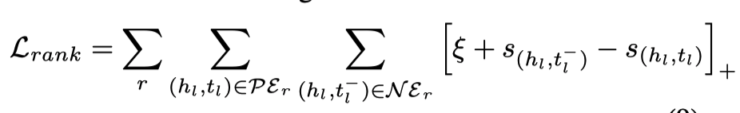
在此处，$\mathcal L{re}$将被合并到关系排名损失$\mathcal L{rank}$中，以完善每个实体对的表示。其中γ是$L{rank}$和$L{re}$之间的权衡因子(trade-off factor)。 为了最小化L关节并优化模型参数，我们将每个关系作为一项任务，并设计了一个基于批采样的元训练程序。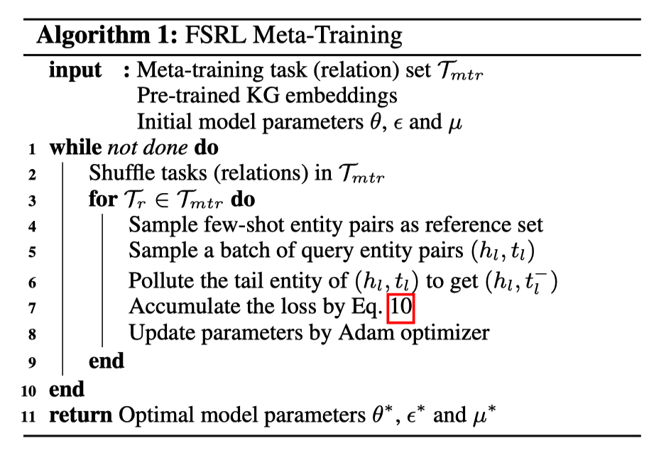
实验
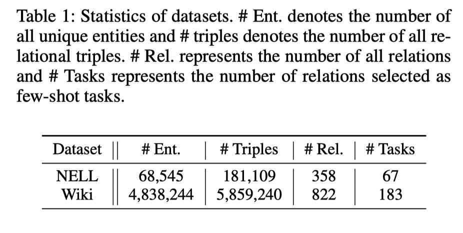
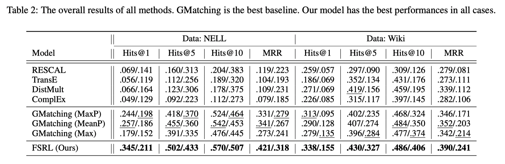
本博客所有文章除特别声明外，均采用 CC BY-SA 4.0 协议 ，转载请注明出处！